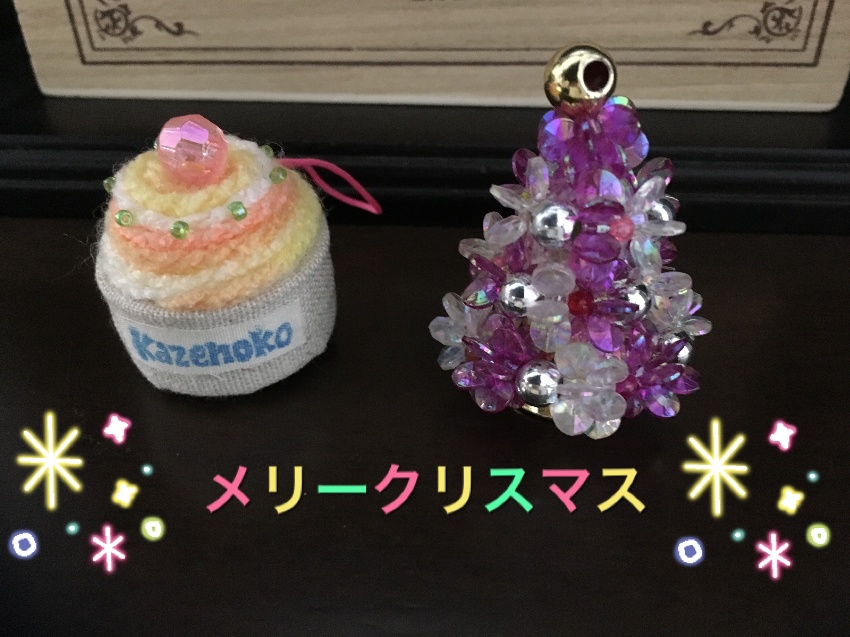
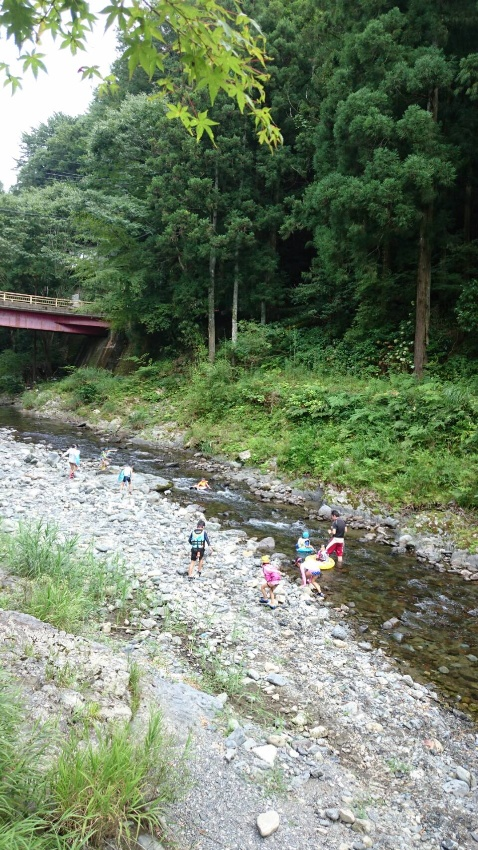

手づくりで楽しむ、
クリスマス会。
クリスマス会の作品写真と、既存サイトの紹介を振り返ります。
日記を読む大阪市住吉区の、放課後の居場所。
KAZENOKO AFTER SCHOOL CLUB
学校が終わったら、風の子へ。
仲間とあそぶ、ゆっくり話す、夢中でつくる。
毎日の放課後を、もっと色とりどりに。
キャッチコピーは営業提案用のサンプルです。


WELCOME TO KAZENOKO
宿題をしたり、おやつを囲んだり。
公園で元気いっぱい遊ぶ日も、
部屋の中であそびに夢中になる日も。
1年生から6年生までが一緒に過ごす、
大阪市住吉区の風の子学童クラブ。
その日常を、少しのぞいてみませんか。
既存サイトの生活紹介をもとにした提案用コピーです。
掲載元と確認待ち事項を見る
DISCOVER OUR DAYS
あそびも、学びも、季節の経験も。知りたいことからどうぞ。
01 / EVERYDAY「ただいま」から「また明日」まで。
宿題、おやつ、あそびの時間をご紹介。

02 / SEASONSいつもと違う経験を、仲間と一緒に。
過去に紹介された行事をまとめました。
写真は風の子学童クラブの既存サイトに掲載されたものです。過去の活動写真として使用しています。
KAZENOKO JOURNAL
毎日の小さな発見を、写真とことばで。

クリスマス会の作品写真と、既存サイトの紹介を振り返ります。
日記を読む既存サイトで紹介された、運動会の様子をご覧ください。
日記を読む既存サイトに掲載された、夏の川キャンプの記録から。
日記を読む日記は既存サイトの過去の記録をまとめ直したデモです。新しい活動報告ではありません。
INFORMATION
旧サイト・移転先サイトに掲載された情報です。最新の利用条件は確認待ちです。参照元を見る
LET’S TALK
見学で確かめたいこと、気になることを整理してみませんか。